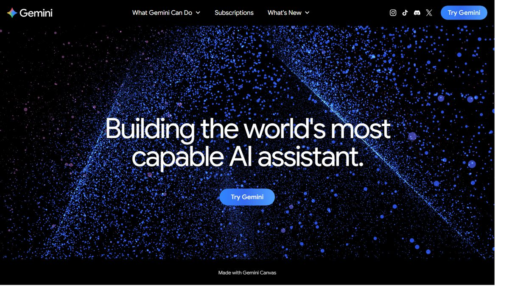
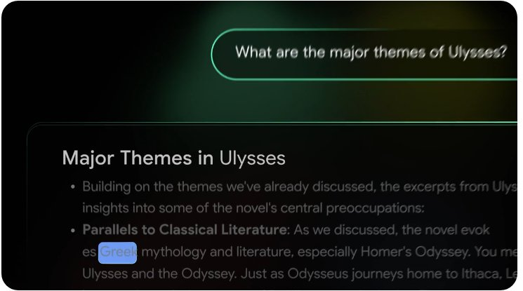
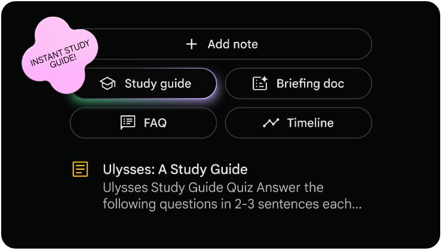
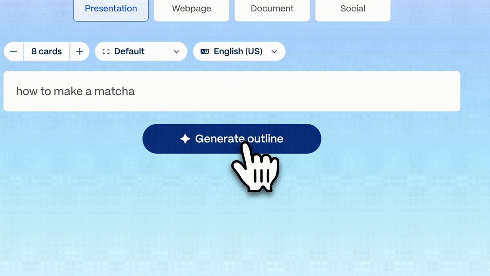
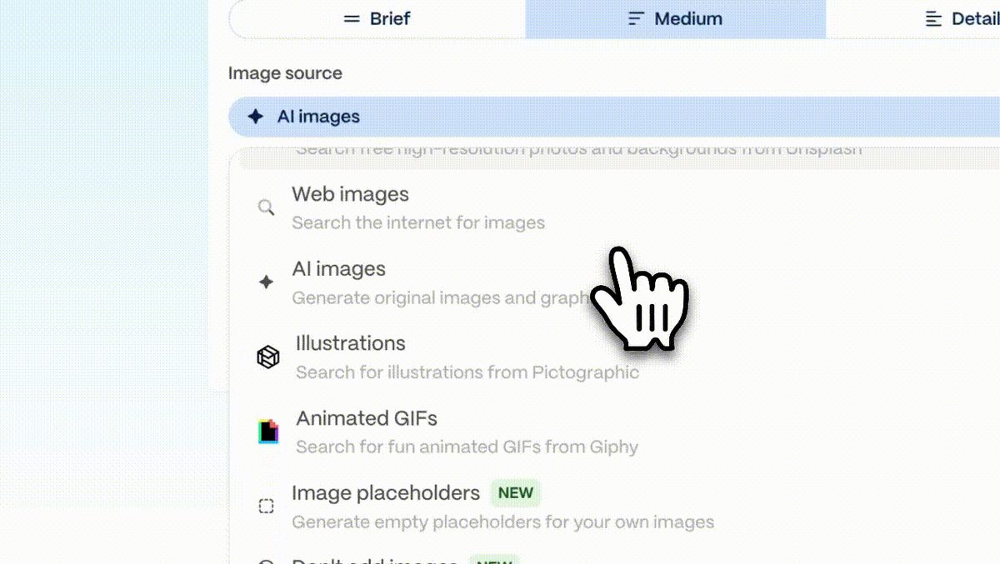
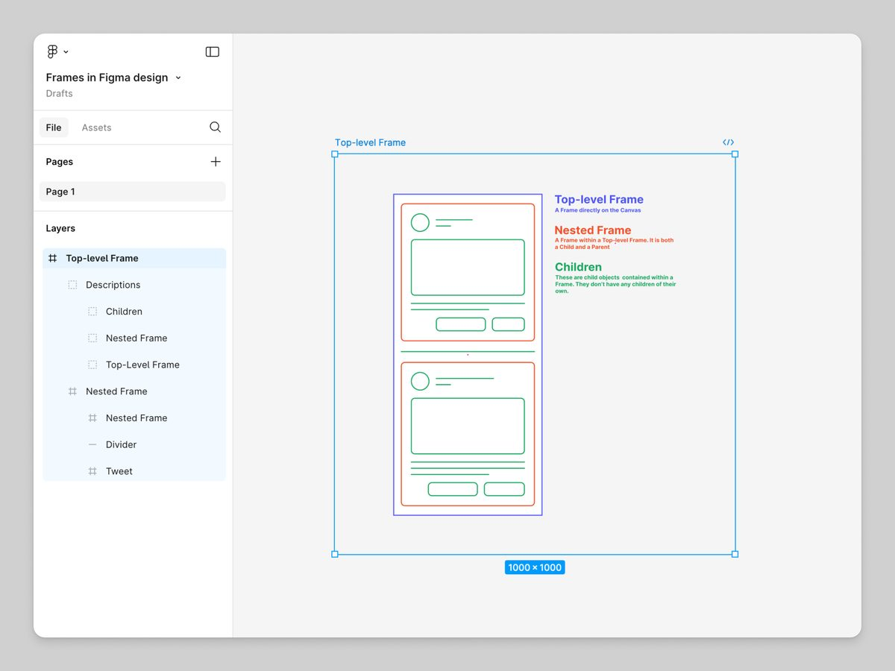
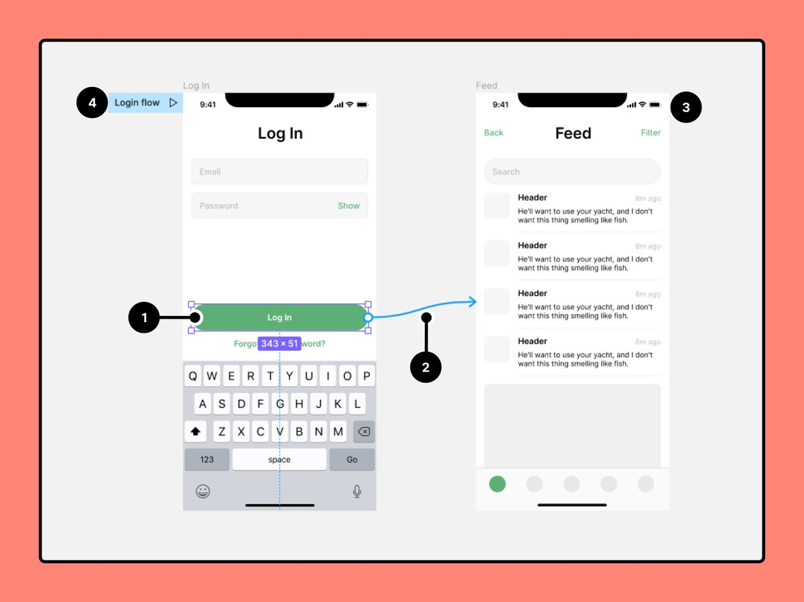

Session 4 • Smart Learning Series · capstone
You've met the tools one by one. Today you chain them into one complete academic workflow — and use it ethically.
Press → / Space to advance · ← to go back · F for fullscreen
Session 4 • Why & what
Real academic work isn't “use one AI tool”. It's a chain: research feeds organization, organization feeds the presentation, the presentation needs design — and every link needs verification.
Session 4 • The workflow · visualize it
Memorise this picture — it's the whole session. Each stage produces an artifact the next stage consumes.
Session 4 • Stage 1 · Research — Gemini

Session 4 • Stage 2 · Organize — NotebookLM


Session 4 • Stage 3 · Present — Gamma


Session 4 • Stage 4 · Design — Figma


Session 4 • Ethics · visualize it
AI sounds confident even when it's wrong. One simple rule: if you haven't checked the source, it doesn't go in your project. NotebookLM shows its sources; for Gemini, YOU find and check them.
Session 4 • Ethics
Cite every source (author, title, link); rewrite AI text in your own words; keep your prompts — they're your work log; disclose which tools you used where.
Don't submit AI output unread; don't invent or trust uncited facts; don't upload confidential material; don't present AI work as entirely your own.
Session 4 • Hands-on · the mini project
Pick one topic from your branch — e.g. AI in healthcare · renewable microgrids · smart-city traffic — and run it through all four stages. Save your best prompt at every stage — they go in your submission.
Session 4 • Assessment · visualize it
Evidence of prompt engineering = the prompts you saved at each stage, pasted into your submission.
Session 4 • Hands-on · reflection
Write 5–8 honest sentences. Honest beats perfect — show you stayed in charge of the tools.
Session 4 • Deliverable
Now — hands-on
Research with Gemini · organize with NotebookLM · present with Gamma · design with Figma — verify, cite and disclose throughout.
gemini.google.com · notebooklm.google.com · gamma.app · figma.comThat's what this programme leaves you with. Use the workflow in your next real assignment — that's where it compounds. Submission deadline as announced in class.